About
A browser extension for Fallen London that lets you mark storylets, branches, and cards as favourite or avoided.
Favourites are highlighted in green and move to the top of the list. Avoided choices are highlighted in red, sink to the bottom, and can be protected from accidental clicks.
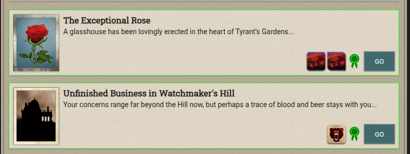
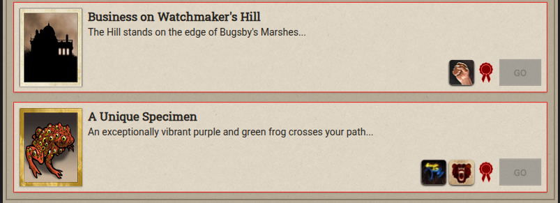
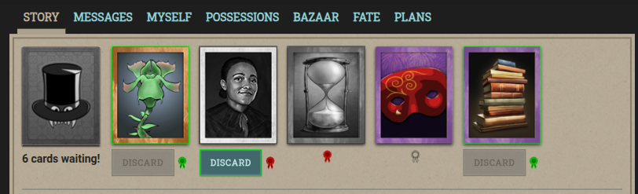
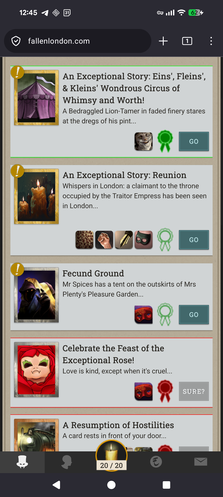
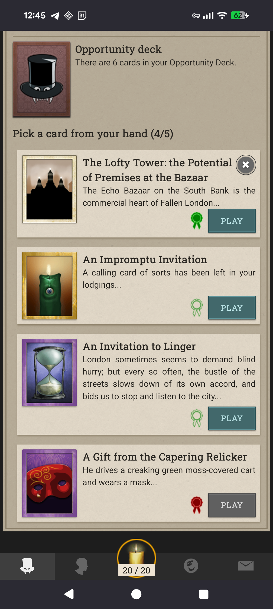
Available for Chrome and Firefox, including Firefox for Android.
Settings
Each storylet, branch, and card on the page gets a small toggle button. Click it to mark items as favourite or avoided (or back to neutral). The extension highlights them and can reorder the list and protect against accidental clicks. All of this is configurable on the Options page.
Click the extension's toolbar button to open the Options page in a tab, or open it from your browser's extension menu. In Chrome the button sits in the extensions menu until you pin it.
The button shows a red ! when something needs your attention: sync storage is full, or per-character favourites can't tell which character is logged in. After an update with new features it shows a gold dot until you open the Options page, which then shows the changelog. Hover over the button to see why.
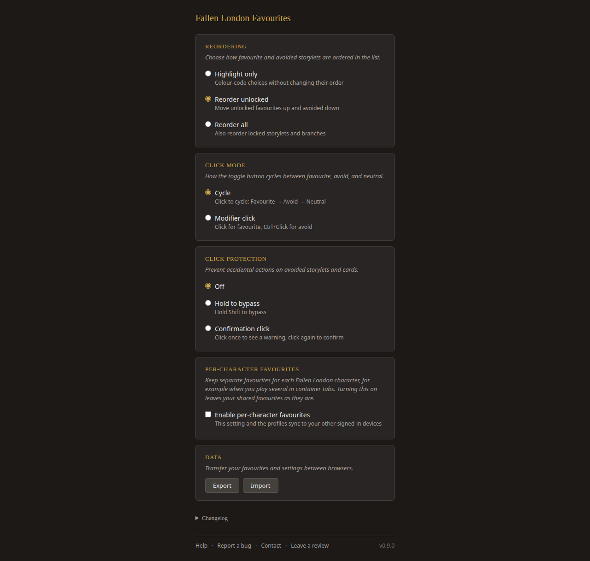
Reordering
Controls whether the extension changes the order of storylets and branches on the page, or just highlights them.
- Highlight only — colour-code favourites (green) and avoided (red) without moving anything. The list stays in its original order.
- Reorder unlocked — favourites move to the top, avoided to the bottom. Only affects unlocked storylets — locked ones stay in place.
- Reorder all — same as above, but also reorders locked storylets and branches.
Click mode
How the toggle button cycles between favourite, avoided, and neutral.
- Cycle — each click advances to the next state: → → → . On mobile, each tap does the same.
- Modifier click — click for , Ctrl+Click for . On mobile: tap to favourite, long press to avoid.
Click protection
Prevents accidental clicks on avoided storylets and cards. Useful when you've marked something as avoided specifically to not click on it by mistake.
- Off — no protection. Clicking an avoided item works as normal.
- Hold to bypass — avoided items ignore regular clicks. Hold Shift and click to go through. On mobile: long press to bypass.
- Confirmation click — first click shows a warning overlay, second click confirms. On mobile: first tap warns, second tap confirms.
Per-character favourites
If you play several characters, for example in Firefox container tabs, each one can keep its own favourites. The feature is off by default and is set up on the Options page.
Turning it on
Check Enable per-character favourites. Your current favourites stay as the shared list, and profiles saved earlier, from an import or another device, are used for their characters. Enable per-character favourites, Start new profiles empty and the character profiles sync like your favourites (see Cross-device sync).
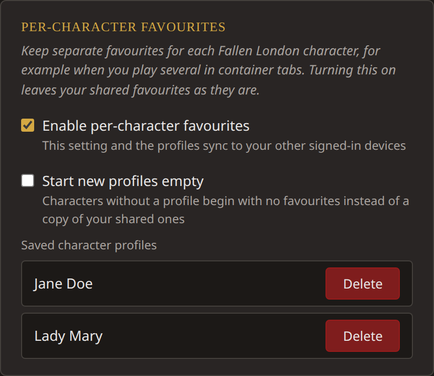
- Each tab follows the character you are logged in as in that tab.
- A character without a profile shows the shared favourites. The first time you mark something as that character, it gets its own profile, copied from the shared list. Its later changes go to that profile only.
- If the extension can't tell which character is logged in, the page shows no favourites or avoided marks and the toggle buttons don't save anything. Click protection does not apply.
- If the only login token the game stored can't be read (Fallen London may have changed), the Options page shows a notice and the toolbar button a red !; turn the feature off to go back to one shared list.
Start new profiles empty
With this option checked, a character without a profile shows no favourites or avoided marks, and its first mark starts an empty profile instead of a copy of the shared list.
Character profiles
The Options page lists saved profiles by character name, or by character number while the name is unknown. A name is saved when that character marks something with the feature on, or arrives with an import or from another device. To delete a profile, click Delete and confirm. That character's favourites are removed, and it shows the shared list again (or nothing, with Start new profiles empty) until you mark something while logged in as that character.
While the feature is off, the list shows profiles that arrived from an import or another device. They are kept but not used.
Turning it off
Uncheck the box, choose the character whose favourites become your shared list, and click Turn off and keep selected. All character profiles are deleted, the chosen one included. If no character has a profile yet, the feature turns off straight away and the shared list stays as it was.
Import & Export
Transfer your favourites and settings between browsers or devices using the Export and Import buttons on the Options page.
Export
Click Export to download a JSON file with all your favourites, character profiles with your characters' names, and the reordering, click mode and click protection settings. Keep it as a backup or use it to transfer data to another browser.
Import
Click Import and select a previously exported JSON file. You'll see a summary of what's in the file — how many shared favourites and avoids for each category and how many character profiles — before confirming. Enable per-character favourites and Start new profiles empty are not in the file; importing leaves them as they are. If the file has character profiles and the feature is off, the summary offers to turn it on.
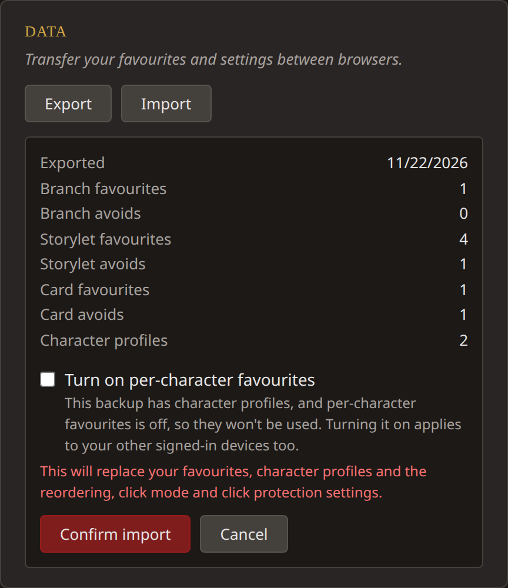
Cross-device sync
If you're signed into Chrome Sync or Firefox Account, your favourites, character profiles and settings sync automatically. No need to export and import manually — changes appear on your other signed-in devices.
Deleting a profile, turning per-character favourites off, or importing a backup without that profile removes it on this device and from sync. Your other signed-in devices keep their copy and sync it back here the next time you mark something or change a setting on them. Delete it on each device, and here again if it comes back.
If a mark or a settings change is made on another device in the few seconds before it receives the turn-off, turning per-character favourites off is undone: the feature comes back on with the old shared list and the profiles. Turn it off again.
A mark made while favourites are still arriving from another device is not saved; mark it again a moment later.
A device with an older version of the extension ignores per-character favourites: it shows and edits the shared list. An older version also refuses backups exported by this one. Update the extension on every device where you play.
Firefox for Android doesn't sync extension data with your account: favourites stay on that device. Use Export and Import to move them.
Sync storage full
Browser sync storage limits both its total size and its number of entries, and each character profile uses some of each. The limits are checked on every device, including Firefox for Android and browsers not signed in to sync, with or without per-character favourites. When either limit is reached, the Options page shows a notice, the toolbar button shows a red !, a mark that would take this device's data past a limit is not saved, and this device may stop sending and receiving changes until there is room.
Delete a character profile to free space. Removing favourites reduces the total size, but usually not the number of entries, so it may not be enough.
A backup that would take your data past the sync storage limits is not imported; clicking Confirm import shows an error instead.
Migrating from another fork
If you previously used Playing Favourites by kav2k or any of its forks, you can import your existing data into this extension.
Unfortunately, browser extensions can't access each other's storage, so the process requires a few manual steps: you'll export the old extension's data through the browser's DevTools console, save it to a file, and then import it here.
Chrome
- Open
chrome://extensionsin the address bar - Turn on Developer mode (toggle in the top right corner)
- Find the old extension in the list
- Click the Service Worker link (or background page for older extensions) — a DevTools window will open
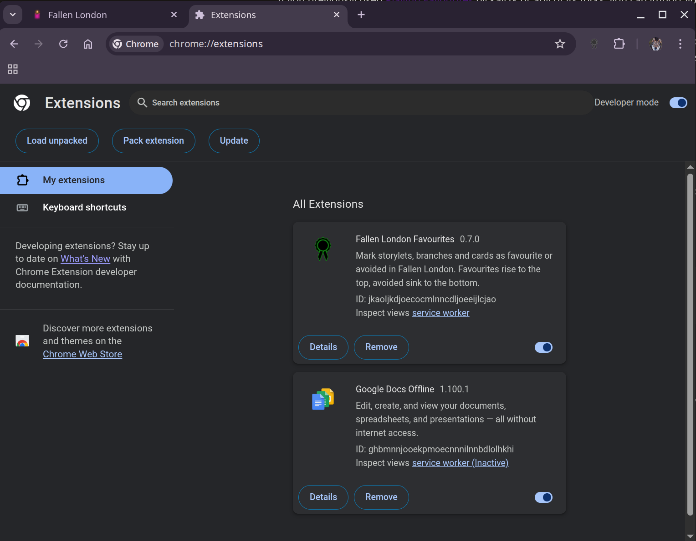
- Switch to the Console tab
- Paste the following script and press Enter:
chrome.storage.local.get(null, (data) => {
console.log(JSON.stringify(data));
});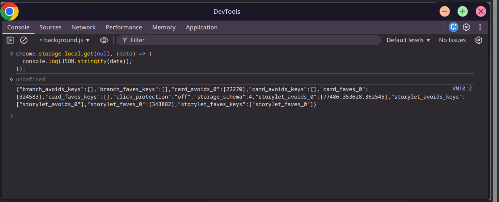
- Right-click the output string in the console and select Copy string contents
- Open a text editor (Notepad, TextEdit, etc.), paste the text, and save
the file as
fl-dump.json - Open Fallen London Favourites Options → click Import → select the file you just saved (see Import & Export for details)
Firefox
- Open
about:debugging#/runtime/this-firefoxin the address bar - Find the old extension in the list
- Click Inspect — a DevTools window will open
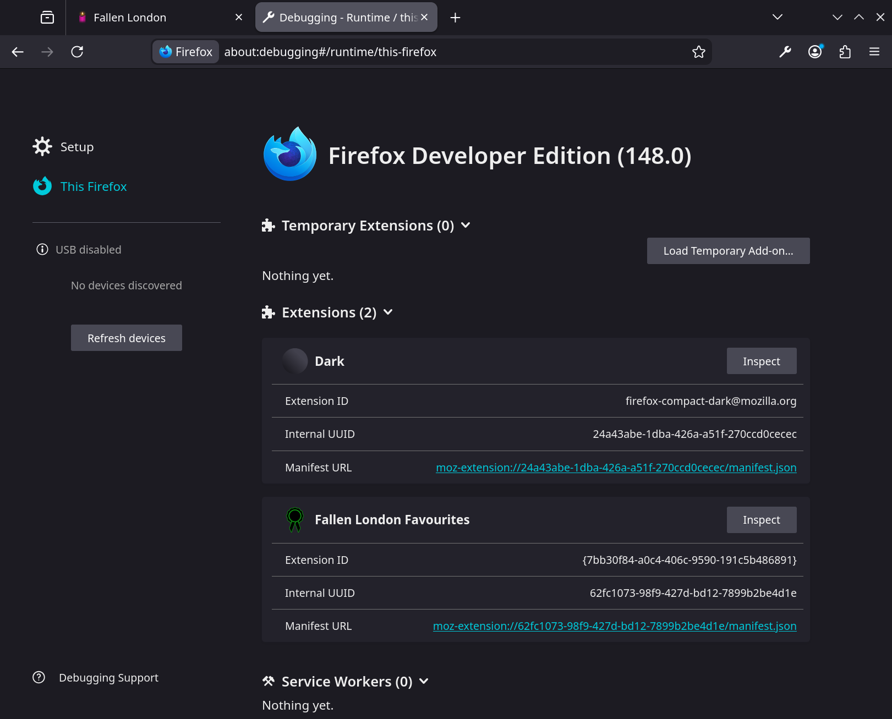
- Switch to the Console tab
- Paste the following script and press Enter:
browser.storage.local.get(null).then((data) => {
console.log(JSON.stringify(data));
});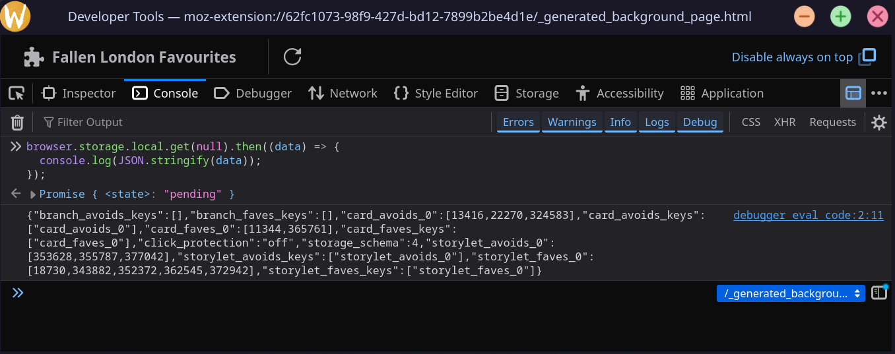
- Right-click the output string and select Copy string contents
- Paste into a text editor and save as
fl-dump.json - Open Fallen London Favourites Options → click Import → select the file (see Import & Export for details)